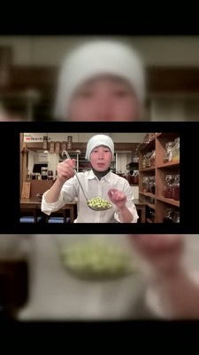
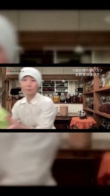
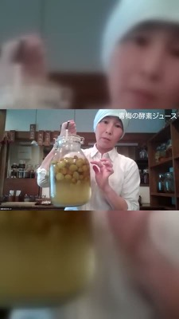
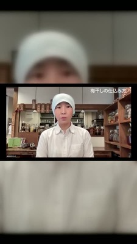
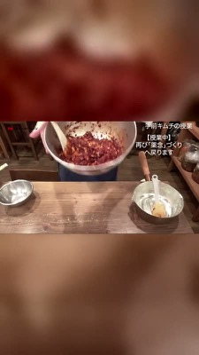
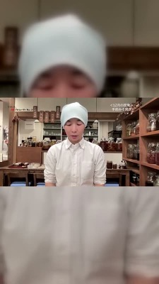

動画づくり ― KPCの12か月CM
撮影したあとの編集を、Claude Codeの「動画」の型に組み込み、つくるのが速くなりました。できた動画は、CMなど別の形にも自由に仕立て直せます。下は、毎月の講座からつくった12か月のCM（4言語の字幕つき）です。






03 コンテンツ生成 ｜ カモシカで動いている仕組み
インスタ・FB・Pinterest・Substack、英語のインスタとFB。メルマガや毎月のニュースレターも。前はそれぞれを別々のスタッフが作り、忘れてしまうこともありました。今は、ひとつの材料から連動してつくれるようになり、抜け漏れや精度の凸凹がなくなってきました。ただ、リマインドが来ても忙しくて手が回らず、形だけになってしまう時もあります。運用の工夫は、まだ続いています。
撮影したあとの編集を、Claude Codeの「動画」の型に組み込み、つくるのが速くなりました。できた動画は、CMなど別の形にも自由に仕立て直せます。下は、毎月の講座からつくった12か月のCM（4言語の字幕つき）です。






日本語・繁体字・英語の旅の記録。ワークショップ（追体験の会）でも使いました。
Web展示を見る →台湾一周・発酵の旅を、A5・52頁の小冊子にまとめました。
インスタ・FB・Pinterest・Substack、英語のインスタ・FBの叩き台を、ひとつの材料からまとめてつくります。
店や講座の材料をつなげて、メルマガや毎月のニュースレターの叩き台をつくります。
人の語り口を再現して、記事づくりや考えを言葉にするのを手伝う会話AI。つくることはできていますが、いまは使っていません。